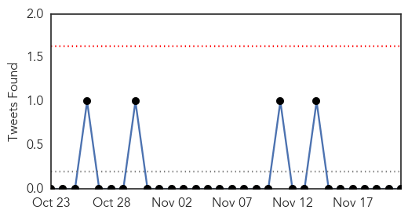
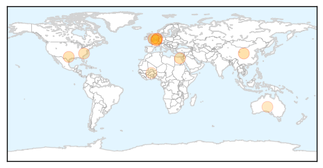
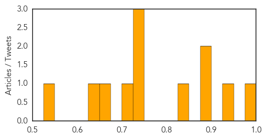

Influenza
30-Day Web Trend
3 alerts, 0 warnings

30-Day Twitter Trend
0 alerts, 0 warnings

Article Locations

Article Confidences
Top Articles:
- 0.982
- Flu Scan for Nov 21, 2014
- 0.935
- Extremely low risk to general public related to outbreaks of avian influenza A(H5N8) in poultry holdings in Europe (ECDC
- 0.883
- ‘Back Boost’ could make Seasonal Flu Vaccines More Effective
- 0.879
- The Flu Is on the Rise in Texas, Just in Time for the Holidays
- 0.834
- Second NC child dies from flu
- 0.741
- Bird flu hits third poultry farm in Netherlands
- 0.739
- Switzerland bans Dutch poultry imports, new bird flu cases in Holland
- 0.733
- Bird flu sees Swiss ban UK, Dutch poultry
- 0.700
- Today's stories from newspapers in Ottawa
- 0.650
- Malaria: preventive treatment to 735 000 children
- 0.638
- Bird Flu breaks out again
- 0.529
- More symptoms of bird flu in Netherlands
Top Tweets:
-
No tweets found for Nov 21, 2014